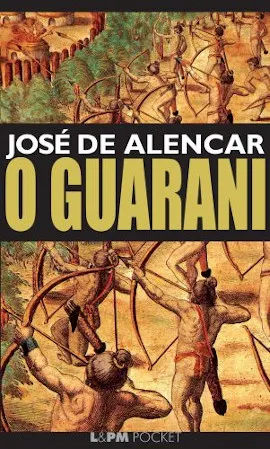
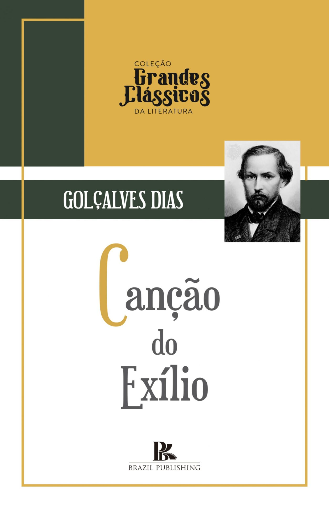

Romantismo
O Romantismo foi um movimento literário que surgiu no final do século XVIII e se consolidou no século XIX, como uma reação ao racionalismo do Neoclassicismo e às regras rígidas do Classicismo. O movimento exaltava a subjetividade, a imaginação e as emoções, valorizando a liberdade de criação e a individualidade.
Principais características do Romantismo
1. Subjetivismo e Sentimentalismo: A literatura romântica enfatiza as emoções e os sentimentos do indivíduo, valorizando o eu-lírico. O amor idealizado, o sofrimento e a melancolia são temas recorrentes.
2. Nacionalismo: No Romantismo, há uma busca por exaltar a identidade nacional e a história do país. No Brasil, os autores românticos destacavam elementos da natureza brasileira, os povos indígenas e o heroísmo nacional.
3. Idealização: O Romantismo costuma idealizar a realidade, apresentando personagens heróicos, amores impossíveis e cenários exóticos. O indígena, por exemplo, é visto como um herói nobre na literatura brasileira da época.
4. Liberdade Formal: Os escritores românticos quebraram as regras rígidas de composição clássica, introduzindo maior liberdade na estrutura dos textos, tanto em prosa quanto em poesia. A rima, a métrica e a estrutura narrativa foram flexibilizadas para melhor expressar as emoções.
Contexto histórico
O Romantismo floresceu na Europa no final do século XVIII e foi influenciado pelas grandes transformações sociais, como a Revolução Francesa e a Revolução Industrial. No Brasil, o movimento surge no contexto da independência do país, refletindo o desejo de construção de uma identidade nacional autêntica e a valorização do passado indígena.
Obras e autores importantes
José de Alencar: "O Guarani"
Gonçalves Dias: "Canção do Exílio"
Álvares de Azevedo: "Lira dos Vinte Anos"
Conclusão
O Romantismo foi um movimento que rompeu com a rigidez do Classicismo e trouxe uma nova abordagem à literatura, centrada no indivíduo, nas emoções e no nacionalismo. Foi um momento de grande expressão cultural, especialmente no Brasil, onde ajudou a consolidar a identidade nacional e a exaltar a cultura local.
Com autores como José de Alencar e Gonçalves Dias, o Romantismo brasileiro criou personagens e cenários que até hoje fazem parte do imaginário cultural do país, celebrando a natureza, o indígena e o sentimento patriótico.